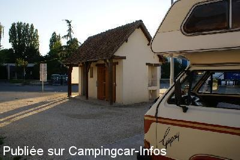
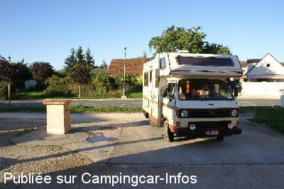

ASN = Aire de services avec stationnement nuit possible de :
AUBIGNY SUR NÈRE
(N° 327)
Accès/adresse :
Rue de la Tour
18700 AUBIGNY SUR NÈRE
18700 AUBIGNY SUR NÈRE
Latitude : (Nord) 47.49093° Décimaux ou 47° 29′ 27′′
Longitude : (Est) 2.43815° Décimaux ou 2° 26′ 17′′
Tarif : Gratuit
Services :


Tous commerces
Autres informations :
Aire ouverte toute l'année.
Tel +33(0)248 815 000

Le 21/08/2011 par Malocoxys

Le 21/08/2011 par Malocoxys
de
averti
le 26/05/2010 :
y suis resté 3 jours le 15/05/2010,la commune possede deux aires dont celle-ci avec des wc public propres,
le stationnement se fait au fond derrière le parking PL,
joli petit village, ballades à pieds aménagées, l'aire se trouve derrière le magasin Aldi, situé sur le Mail Guichard
y suis resté 3 jours le 15/05/2010,la commune possede deux aires dont celle-ci avec des wc public propres,
le stationnement se fait au fond derrière le parking PL,
joli petit village, ballades à pieds aménagées, l'aire se trouve derrière le magasin Aldi, situé sur le Mail Guichard
de
Delioux
le 11/11/2009 :
Nous nous y sommes arrêtés dans la nuit de vendredi à samedi. Emplacements pour CC pris par des voitures. Mais grand parking tout au fond relativement calme car proximité d'un parking pour poids lourds. Attention le samedi matin marché à proximité, donc les voitures se garent sur le parking réservé au CC.
Très joli petit village.
Nous nous y sommes arrêtés dans la nuit de vendredi à samedi. Emplacements pour CC pris par des voitures. Mais grand parking tout au fond relativement calme car proximité d'un parking pour poids lourds. Attention le samedi matin marché à proximité, donc les voitures se garent sur le parking réservé au CC.
Très joli petit village.
de
PETAT
le 13/04/2007 :
Aire de services en cours de fermeture : installation d'un super marché. Stationnement toujours possible au fond du parking poids-lourds. Nouvelle aire route de la Chapelotte D7, parking de l'ancienne piscine.
Aire de services en cours de fermeture : installation d'un super marché. Stationnement toujours possible au fond du parking poids-lourds. Nouvelle aire route de la Chapelotte D7, parking de l'ancienne piscine.
de
robbie
le 18/03/2007 :
lovely village most enjoyable stay here,nice and peaceful
lovely village most enjoyable stay here,nice and peaceful
de
JEAN MARIE
le 23/12/2006 :
Sur l'aire herbeuse face aux WC, défilé quasi permanent de jeunes venant fumer des joints. Sur le parking dès 10 heures grande réunion de jeunes asiatiques venant faire ronfler leurs moteurs. Sur le parking du fond, avec des boules quies plein les oreilles, possible de dormir. Les 3 CAMPING-CARS présents ce jour là ont d'ailleurs opté pour ce choix. Je n'avais pas eu ces problèmes en octobre où j'avais passé 2 nuits au même endroit.
Sur l'aire herbeuse face aux WC, défilé quasi permanent de jeunes venant fumer des joints. Sur le parking dès 10 heures grande réunion de jeunes asiatiques venant faire ronfler leurs moteurs. Sur le parking du fond, avec des boules quies plein les oreilles, possible de dormir. Les 3 CAMPING-CARS présents ce jour là ont d'ailleurs opté pour ce choix. Je n'avais pas eu ces problèmes en octobre où j'avais passé 2 nuits au même endroit.
de
Nomade 59
le 01/04/2005 :
La borne a été remplacée par une installation artisanale avec robinets d'eau propre. Vidange des eaux usées sur une plateforme dont l'écoulement était quasiment bouché. Vidange des WC dans les WC publics. Pour la nuit, allez plutôt sur la route de Sancerre, près de l'étang au parc des sports.
La borne a été remplacée par une installation artisanale avec robinets d'eau propre. Vidange des eaux usées sur une plateforme dont l'écoulement était quasiment bouché. Vidange des WC dans les WC publics. Pour la nuit, allez plutôt sur la route de Sancerre, près de l'étang au parc des sports.